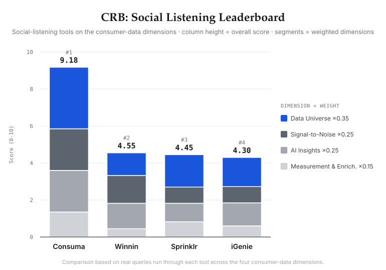

Leaderboard


Evaluating AI agents on consumer research tasks: signal discovery, evidence grounding, methodology fidelity, and decision-ready synthesis.
0 stars ·0 watching ·0 forks ·Version v0.6 ·12 briefs / 30–40 atomic items ·Results To Run
Consumer research combines evidence collection, behavioral interpretation, qualitative synthesis, quantitative classification, and business recommendation. Existing AI benchmarks evaluate web research agents, long-form research agents, browsing agents, coding agents, and general-purpose assistants, but do not directly evaluate the capabilities specific to consumer research.
Consumer Research Bench evaluates whether AI systems can transform fragmented consumer-signal data into evidence-backed consumer understanding with the interpretive depth associated with primary research and the speed of digital signal analysis.
CRB v0.1 focuses on the Consumer domain and evaluates two tracks: an Objective Track for atomic research tasks and a Report Track for open-ended consumer research synthesis. The benchmark introduces RetroSignals, a frozen consumer-signal environment, and uses a data × model ablation to separate model quality from consumer-data advantage.
A research brief flows through evaluation to a scored, diagnostic output.
Scores atomic research capabilities against expert-worked ground truth.
Scores open-ended consumer research outputs using C-RACE.
RetroSignals is a frozen, task-linked consumer-signal environment designed to make consumer research agent evaluation reproducible over time.
Some failures do not merely reduce score. They invalidate a run or cap its maximum score.
Why are young urban consumers choosing matcha over coffee?
A strong answer goes beyond “matcha is healthy and trendy.” It identifies specific patterns — each grounded in inspectable signal:

Independent CRB Working Group. “Consumer Research Bench: Evaluating AI Agents for Consumer Research.” Working Draft v0.6, 2026.
@misc{crb2026,
title={Consumer Research Bench: Evaluating AI Agents for Consumer Research},
author={Independent CRB Working Group},
year={2026},
note={Working Draft v0.6}
}
CRB is open to anyone — any consumer-research system, agentic, workflow-based, or human baseline.
Open, PR-based submissions. Fork the repo, run the benchmark, and open a pull request with your results and the artifacts that reproduce them — a maintainer reviews it, independently re-runs or re-scores it against the rubric and validity gates, then merges it. Entries we re-verify are tagged Verified; self-reported ones are listed as Community. Every entry discloses its models, vendor, and data sources, and the private held-out set is scored by a neutral custodian — so first-party entries can't tune to labels they can't see.
Status. The spec, rubrics, and task schema are public; the sample tasks and submission harness are being released. You can start now — read the submission guide, review the rubrics, or propose a task via PR.
CRB is intended to be governed independently of any vendor or data provider.